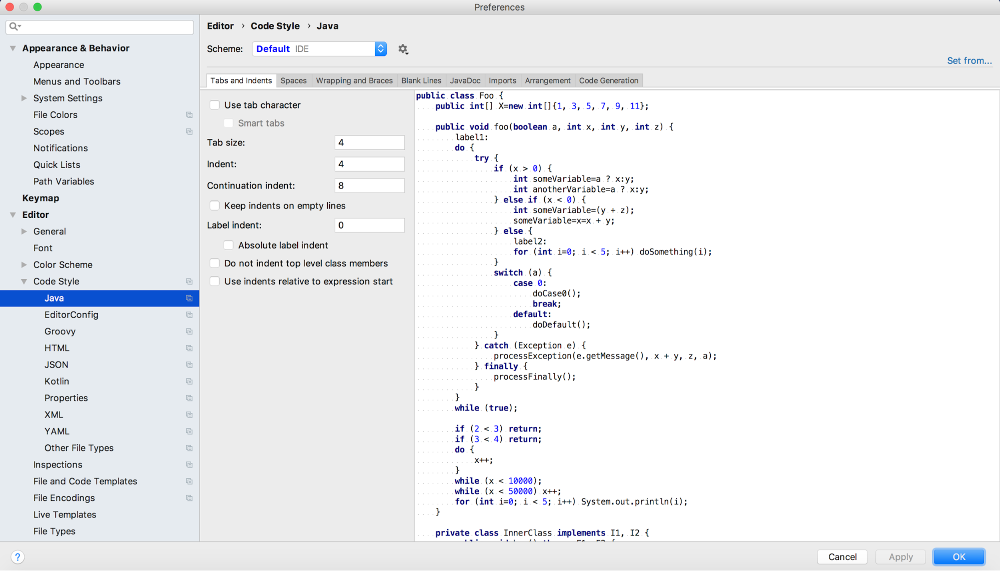
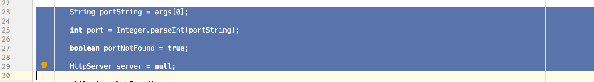

Intellij IDEA Style Checking Tutorial
Overview
Now that you’ve learned a bit about coding style, we’re going to introduce you to some tools you can
use to look for style errors in your own code. First we’ll show you how to use a basic IDE style checker.
Then we’ll show you how to use a dedicated style checking program called EditorConfig.
Most IDEs come with some basic style checking built in. The kind and complexity of style checking varies from IDE
to IDE, as does how the checks ar displayed. They are usually not as sophisticated as dedicated style checking
tools are, but they are generally easy to use and require less setup. To get you started, we will show you how
to configure the Intellij IDEA to do basic style checking.
Using the Built-In Style Checker
- Create a new Project by going to File -> New -> Project… Click next to skip past the first two
windows. Name your project CodingStyle. Click next to skip through the remaining windows and create your
project. Create a java file by right-clicking on the src folder and going to New -> Java Class. Name your
file CodingStyle. Copy the code from the CheckstyleExample.java file that you were given as a resource.

- Navigate to your Settings Menu. On Windows, go to File -> Settings. On Mac, go to Intellij IDEA ->
Preferences. Select Editor ->Code Style -> Java.

- As you can see in the menu above, you can specify a number of different style preferences from this menu,
which your IDE will attempt to enforce. Under the “Tabs and Indents” tab, change the number in
the Indent field to 2. Notice how the example code on the right has changed to accept the new indent. This
code is there to help you see how changes to the settings will affect how your code looks. The flashing
cursors will help you see the portions of your code that the changes affect.

- Click on the Spaces tab. Under the “Around Operators” dropdown menu, uncheck the
“Assignment Operators” box. Notice how the assignment operators in the code on the right no
longer have spaces around them.

- Look briefly through the other tabs to see what kinds of formats you can specify. Click “Apply”
to save your changes. Click on the settings gear and then click Copy to Project to save your settings to
this project. Then click “OK” to exit the settings window.

- Notice that the code you copied into the IDE is not adhering to the style changes you just made. The indents
on this file are too large and there are spaces around all of the assignment operators. Because you’ve
specified these changes in your code style preferences, you can easily reformat your code to fit these
styles. Click on the “Code” menu, and then select “Reformat Code”. Your code will
immediately change to fit the standards you set. You may have to select the file in the project pane on the
right before selecting Code -> Reformat Code.

- Notice that there are no longer spaces around the assignment operators and the indentation has been
adjusted. What if you only want to reformat a portion of your code? Intellij IDEA provides for this
situation as well. Undo the reformatting, and then highlight a portion of your code. Click on Code ->
Reformat Code again. Now only the portion of the code you highlighted has been formatted to your code style
preferences.


EditorConfig
Intellij IDEA comes with built-in support for a style checking language called EditorConfig. EditorConfig is a
powerful style checking language that works with a wide variety of languages and IDEs. The main reason to learn
EditorConfig is because of its portability. Users working on very different IDEs can all load in the same
EditorConfig file and expect it to work well. It is also possible to configure EditorConfig files to check style
on multiple file types, allowing you to put all of your style guides into one convenient file. If you plan on
using EditorConfig in your projects, we encourage you to visit the EditorConfig
website to learn the format in more depth.
- Navigate to the settings menu as you did in the previous tutorial. Instead of clicking on Java under the
Code Style drop down menu, click on EditorConfig. The pane on the right shows a small example of what
EditorConfig code looks like. Click OK to leave the settings menu.

- To use EditorConfig in your project, you will need to create a .editorconfig file. Right click on the src
folder and go to New -> File. Name this file .editorconfig. At the top of the file, type root without a
space at the end. Notice the suggestion pane underneath what you just typed: root = true. Because you called
your file .editorconfig and it is in the src directory, Intellij knows this is an EditorConfig file and will
give valid suggestions for an EditorConfig file. This is very helpful when you know what you want to format
but you aren’t sure what the formatting options are. Go ahead and type in root = true. This is a
required statement at the top of every EditorConfig file that tells the plugin to use this file for style
checking.

- The basic syntax of an EditorConfig file is as follows:
[type of file]
property = setting
as in the following example file:

- Since we only have one file in our project and this is a simple example, we will be building a much simpler
EditorConfig file. Build your file to look like the following:

- As soon as you save the file, Intellij will load your settings. The settings in this file will override the
code style settings you set in the Settings menu. Reformat your code the same way you did in the previous
Tutorial: Code -> Reformat Code.

- You can see that the indentation specified in the .editorconfig file overrode the indentation you specified
in the Settings, and the file now has a smaller indentation than it did with your defined style settings.
Because you did not specify any spacing settings in the .editorconfig file, the Code Style settings were
retained and spaces around the assignment operator were removed. IDEA will keep your settings unless you
override them using EditorConfig.
- Turn in your .editorconfig file on LearningSuite to show that you have completed the tutorial.
Additional Resources
Here are some more lengthy style guides you might want to consult to gain additional insight on how to write
quality code.
Oracle Java Style Guide
https://www.oracle.com/technetwork/java/codeconventions-150003.pdf
EditorConfig Information
https://editorconfig.org